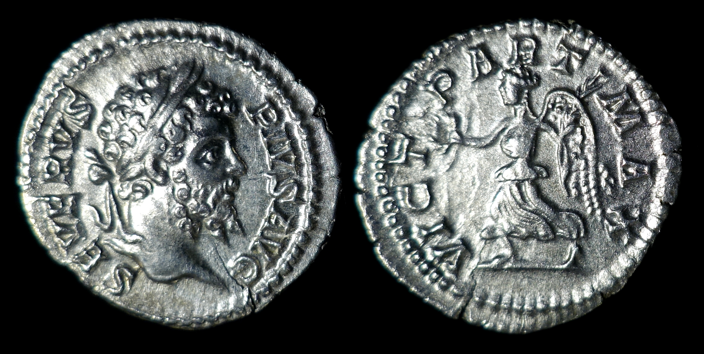

Joseph's Ancient Coins
Septimius Severus
AR Denarius

202 - 210 A.D., Rome Mint
2.843g, 19.5mm, 12H
Obverse: SEVERVS PIVS AVG, Bust of Septimius Severus, laureate, facing right
Reverse: VICT PART MAX, Victory, winged, draped, advancing left, holding wreath in extended right hand and palm sloped over left shoulder in left hand
Reference: RIC IV 295